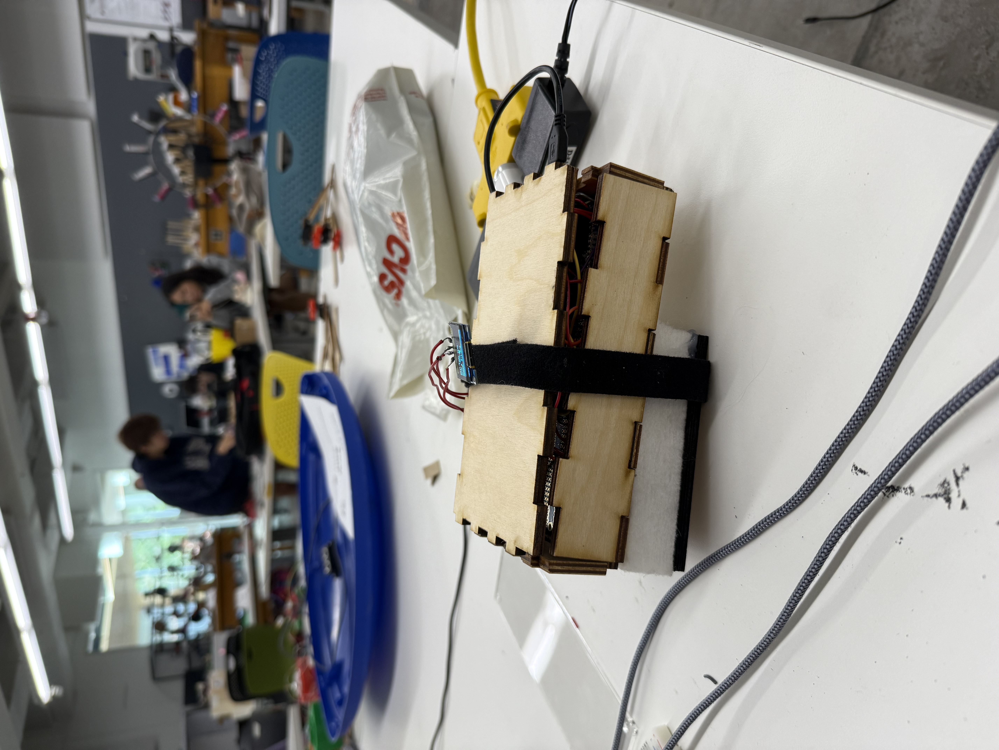

<div class="textcontainer">
<p class="margin"></p>
<h3>Final Project: [Smart Shoe]</h3>
For my final project, I decided to create a sole that you can attach to the bottom of your shoe that would allow the user to run faster. The sole will do this by using some sort of sensor to detect when the runner's foot makes contact with the ground, and fire a piston at that instant, giving the runner a more powerful step.
<p class="margin"></p>
<img style = "width: 35%" src="basiccircuit.jpg">
<p class="margin"></p>
Basic wiring:
<p class="margin"></p>
I connected a capacitive touch sensor (piezo disc) to the microcontroller which can send data to the microcontroller through analog. I also connected a solenoid piston to the microcontroller. The micrrocontroller can control the solenoid through digital write. Since the solenoid piston requires 12 volts to operate, I needed to add a potentiometer/voltage changer to convert 5 volts into 12 volts. The main challenge that I faced during the basic wiring process is that I couldn't manage to get the solenoid piston to move at all. I tried everything from re-soldering the solenoid as well as checking my code, neither of which fixed the problem. It was only after that I got a voltmeter to measure the voltage across the potentiometer/voltage changer that I realized that the solenoid was not receiving 12 volts but rather 6 volts. After adjusting the circuit of the potentiometer/voltage changer using a screwdriver, I was finally able to get 12 volts to the solenoid and have the piston move. This experience taught me a valuable lesson: If any of your components aren't working, the first thing you shold do is connect a volt meter to the circuit to make sure the component is actually getting sufficient voltage to operate.
<p class="margin"></p>

<p class="margin"></p>
Casing:
<p class="margin"></p>
The casing for my final project consisted of 3 parts. 1. The lasercut wooden box at the very top to hold wiring. 2. A rectangular piece of foam that I carved out by hand to fit the piezo disc and to add cushion to the shoe. 3. A final lasercut wooden plate on the very bottom of shoe, with a hole lasercut perfectly to fit the solenoid piston. Lastly, I added a velcro so that the runner can easily strap the sole onto the bottom of their shoe.
<p class="margin"></p>
<video width="640" height="360" controls>
<source src="shoedemo.mp4" type="video/mp4">
</video>
<p class="margin"></p>
Testing:
<p class="margin"></p>
While testing my newly cased-up project, I found that I was once again unable to get the piston to move. This time however, I immediately got my voltmeter to measure the voltage going into the solenoid, which turned out to be around 5 volts. I was confused for a bit because I had adjusted the potentiometer/voltage changer to convert 5 volts into 12 volts, yet the solenoid wasn't receiving the full 12 volts. It turns out my laptop just wasn't providing enough power to the microcontroller, and my project worked without much issue once connected into a different power source such as the wall socket.
<p class="margin"></p>
<video width="640" height="360" controls>
<source src="screendemo.mp4" type="video/mp4">
</video>
<p class="margin"></p>
Improvement:
<p class="margin"></p>
With the fundamentals of my project working well, I decided to incorporate a new aspect. I thought it would be cool to have the shoe track the runner's progress. To do this, I wired an Oled screen to the microcontroller. The first thing that I had the Oled screen display was the stepcount of the runner, which was easy to implement as it was just a simple counter. I later incorporated slightly more advanced algorithms that estimate the runner's 100 meter time as well as their instantaneous velocity (m/s) based off the speed at which the sole was being compressed. Lastly, I created a visual bar that lights/fills up when the runner makes contact with the ground.
<p class="margin"></p>
Final code:
<p class="margin"></p>
<html lang="en">
<head>
<meta charset="UTF-8">
<title>Code Scroller</title>
<style>
.code-box {
width: 90%;
max-width: 800px;
height: 300px;
overflow: auto;
background-color: #1e1e1e;
color: #dcdcdc;
padding: 15px;
border-radius: 8px;
font-family: monospace;
white-space: pre;
margin: 20px auto;
box-shadow: 0 0 10px rgba(0,0,0,0.2);
}
</style>
</head>
<body>
<div class="code-box">
<code>
#include <Wire.h>
#include <Adafruit_GFX.h>
#include <Adafruit_SSD1306.h>
// OLED config
#define SCREEN_WIDTH 128
#define SCREEN_HEIGHT 64
#define OLED_RESET -1
Adafruit_SSD1306 display(SCREEN_WIDTH, SCREEN_HEIGHT, &Wire, OLED_RESET);
// Pins
const int piezoPin = 35;
const int solenoidPin = 23;
// Step detection
const int threshold = 4000;
unsigned long lastTrigger = 0;
const int cooldown = 100;
// Gait + timing
const float strideLength = 1.5; // meters
const float totalDistance = 100.0; // meters
int stepCount = 0;
float estimatedTime = 0;
float speed = 0;
float stepsPerSecond = 0;
unsigned long lastStepTime = 0;
// Animation
unsigned long lastStepFlash = 0;
const int flashDuration = 200;
void setup() {
Serial.begin(115200);
pinMode(solenoidPin, OUTPUT);
digitalWrite(solenoidPin, LOW);
if (!display.begin(SSD1306_SWITCHCAPVCC, 0x3C)) {
Serial.println(F("OLED init failed"));
while (true);
}
display.clearDisplay();
display.setTextColor(SSD1306_WHITE);
updateDisplay();
}
void loop() {
int piezoValue = analogRead(piezoPin);
Serial.println(piezoValue);
if (piezoValue > threshold && millis() - lastTrigger > cooldown) {
fireSolenoid(100);
stepCount++;
unsigned long currentTime = millis();
if (lastStepTime != 0) {
float timeBetweenSteps = (currentTime - lastStepTime) / 1000.0;
stepsPerSecond = 1.0 / timeBetweenSteps;
int estimatedSteps = totalDistance / strideLength;
estimatedTime = estimatedSteps / stepsPerSecond;
speed = strideLength * stepsPerSecond;
}
lastStepTime = currentTime;
lastTrigger = currentTime;
lastStepFlash = currentTime;
updateDisplay();
}
if (millis() - lastStepFlash &lt; flashDuration) {
drawStepFlash(); // Show visual for brief time
}
delay(10);
}
void fireSolenoid(int duration) {
digitalWrite(solenoidPin, HIGH);
delay(duration);
digitalWrite(solenoidPin, LOW);
}
void updateDisplay() {
display.clearDisplay();
display.setTextSize(1);
display.setCursor(0, 0);
display.println("Steps:");
display.setTextSize(2);
display.print(stepCount);
display.setTextSize(1);
display.setCursor(0, 24);
display.println("Est. 100m Time:");
display.setTextSize(2);
if (estimatedTime > 0 && estimatedTime &lt; 60) {
display.print(estimatedTime, 1);
display.println("s");
} else {
display.println("--.--s");
}
display.setTextSize(1);
display.setCursor(0, 48);
display.print("Speed: ");
display.print(speed, 1);
display.println(" m/s");
display.display();
}
void drawStepFlash() {
// Draw a filled bar at the bottom when a step is detected
display.fillRect(0, 60, SCREEN_WIDTH, 4, SSD1306_WHITE);
display.display();
}
</code>
</div>
</body>
</html>
<p class="margin"></p>
Summary:
<p class="margin"></p>
Overall, I think that I could have been more ambitious when it come to my final project idea. Nonetheless, I am proud that I was able to set my mind to a project idea without giving up, and actually getting a working prototype. I will certainly continue working on this shoe, as well as design other projects in the future.
</div>